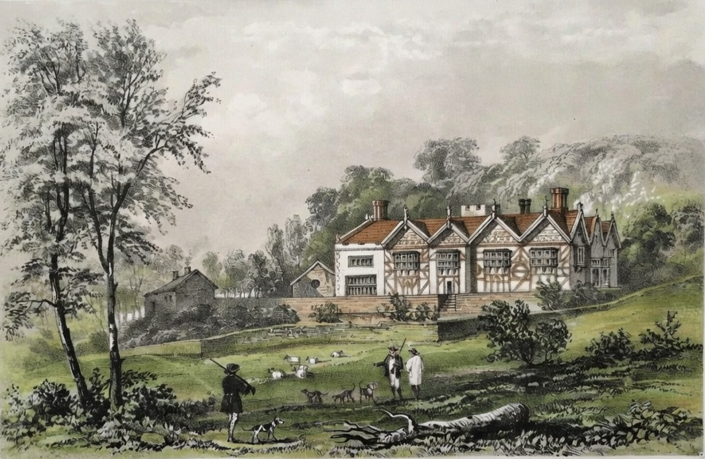
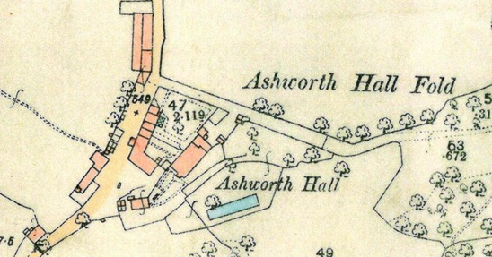
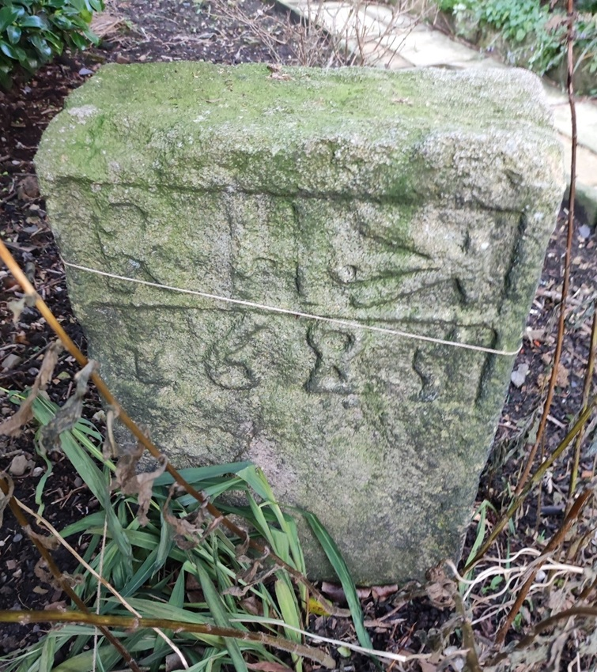
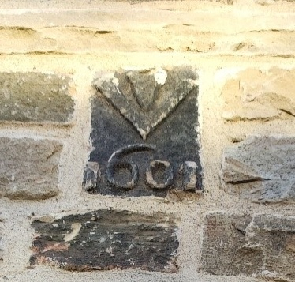
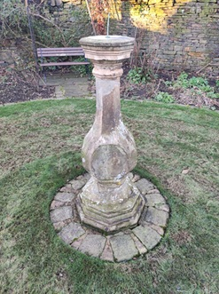

Ashworth Hall
For 350 years Ashworth Hall was owned by the Holts. A branch of the Gristlehurst Holts took over the hall in 1348 and held it until the 18th century. Hugh, son of John del Holt, married Matilda, daughter of Robert de Assheworth and heiress to the estate. The manor was eventually lost by Richard Holt, whose extravagance led to its sale.


A stone-built gate with large studded doors stands alone. Much of the original hall was destroyed and a new hall built in its place. Originally there was an eastern side to the quadrangle. The southern part featured a rose garden terrace, orchard, and ornamental pond with a moat and hanging gardens. A chapel and chapel house were built by Sir Thomas Holt in 1514. The hall still retains a massive stone gable end from the 15th century. The house was later enlarged into a mansion with half-timbered lath and plaster, forming a wing of three gables running back to the road. A courtyard was formed with two cottages and farm buildings.
In later years, the wing and square entrance tower were removed and the half-timbered walls replaced with handmade bricks. The original stone-built house had mullioned windows. A hundred yew trees once grew in stately avenues or sombre groups around the house for many generations. Two-thirds of the hall was let to the vicar at a nominal rent, while the remainder served as the hall farm and farmhouse. A stream ran beneath this portion of the house, powering a small waterwheel under the floor. In the garden stands a large upright stone inscribed ‘R.H. 1658’ for Richard Holt, and an undated sundial on a graceful stone pedestal.
To read more about the Holts of Ashworth, click here.
A 17th-century gatehouse still stands, but little else remains of the ancient seat of the Ashworths. The main block of the house dated from 1685, built of brick on a stone foundation, with a fine staircase and a collection of panelled rooms, probably from the early 18th century.






Modern Location - Ashworth Road, Rochdale
Ashworth Road, Rochdale, Greater Manchester OL11 5UP
Interactive map showing the modern location of the historic Holt property. Zoom and drag to explore.